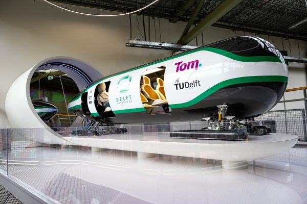
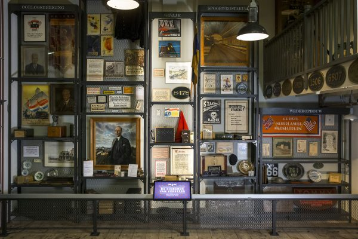
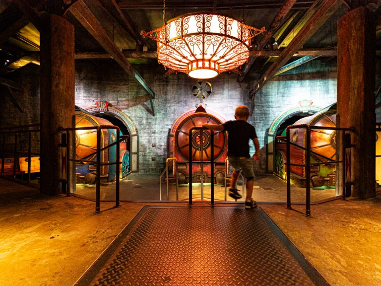

Het leukste station van Nederland
TicketsHet Spoorwegmuseum is niet zomaar een museum. Het is een fascinerende plek waar je ontdekt hoe de trein de wereld heeft veranderd. Met een levensecht station, een theater, spannende attracties en met wisselende tentoonstellingen en evenementen ben je altijd op het juiste spoor!
Ontdek ons museumWinter Station
Tijdens Winter Station, van 24 december 2022 t/m 8 januari 2023, brengen ontelbare lampjes, kerstdecoraties en een antieke carrousel het hele Spoorwegmuseum in een romantische wintersfeer. Met als absoluut hoogtepunt: schaatsen tussen de treinen!
Winter Station 2022Ontdek het museum
Ontdek ons museumWinter Station 2022
24 dec 2022 t/m 8 jan 2023

Hyperloop

Kinderen van Versteeg

Vuurproef
Deze spectaculaire, prijswinnende, attractie neemt je mee op reis door twee eeuwen spoorhistorie. Wat heeft de trein voor de wereld betekend? En hoe ziet de toekomst eruit?
Winter Station 2022Onze attracties
OntdekJumbo express
attractie
Techlab
attractie
De vuurproef
Attractie
Waar kan ik wat vinden
We zetten je op het juiste spoor met de plattegrond van het Spoorwegmuseum!
Bekijk de plattegrond